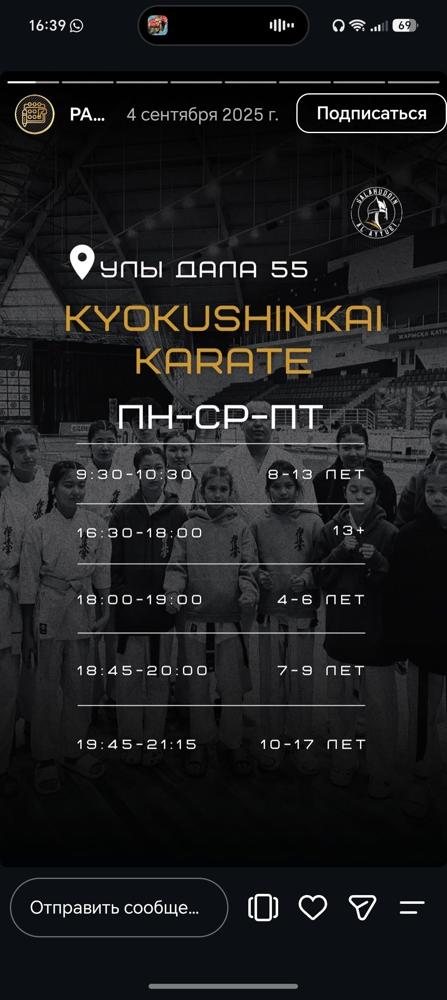

About the academy

Salahuddin is a martial arts academy in Astana. Its published schedules include Kyokushinkai karate, taekwondo, judo and Muay Thai. There are groups for different ages, including children and adults.This site brings together coach profiles, class times and information for a first visit. The academy's posts show classes at Uly Dala 55 and Turan 19. Check the address for your group because the timetables are different.